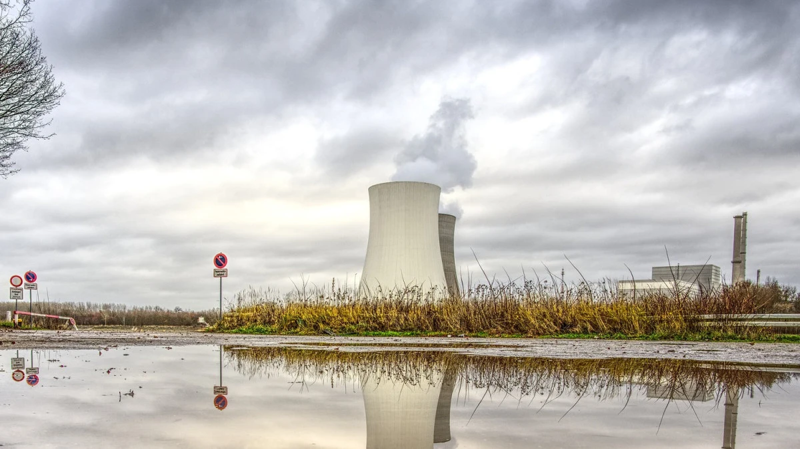

Джордж Мартин
- Джордж Ре́ймонд Ри́чард Ма́ртин (англ. George Raymond Richard Martin, род. 20 сентября 1948, Бейонн, Нью-Джерси, США) — американский писатель-фантаст, сценарист, продюсер и редактор, лауреат многих литературных премий. В 1970—1980-е годы получил известность благодаря рассказам и повестям в жанре научной фантастики, литературы ужасов и фэнтези. Наибольшую славу ему принес выходящий с 1996 года фэнтезийный цикл «Песнь Льда и Огня», позднее экранизированный компанией HBO в виде популярного телесериала «Игра престолов». С 2011 года Мартин пишет роман «Ветра зимы» (шестую часть цикла), в планах седьмая и последняя часть — «Грёзы о весне». «Песнь льда и огня» дала литературным критикам основания называть Мартина «американским Толкином»[5].

.Атом электр станйиясы не ушын керек казакстанга? тариххын айта кететн болсак 1950 жылы аэс ыске косылды суйтп ол алемнын ажырамас болыгыне айналды 2.АЭС салуына голосвой жургызылды казакстанда 67% адам аэсты колдады 33% адам аэсты салуына карсы болды.Не себепты карсы болуы мумкын? 3.Себебы адам денсаулыгына зиян деп кобысы ойлайды брак ол тек атлып кетсе гана ал атылмаса катты зиян емес
Әлемдік экономика
.png)
Әлемдік экономикада казакстан оте каркынды дамп келе жатыр мкнай ондыру минералдар жанеде коп теген бизнес идиялар толыгырак осы батырманы басыныз
Фильм жаналыктар

Казакстанда Фильмдер дамыган но аса катты демесекте болады мысалы дастур кагаз кеме деген секлды атакты фильм сериалдар бар толыгырак осы батырманы басыныз